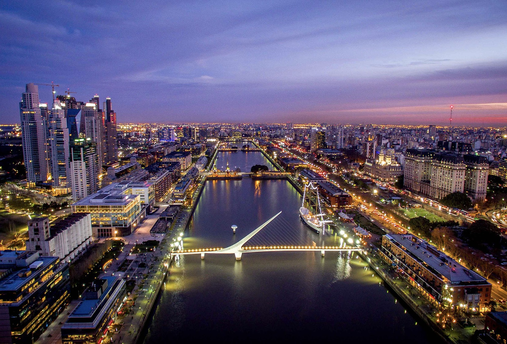

La hermosa ciudad de Buenos Aires nos ofrece diferentes atracciones a la hora de recorrerla. La ciudad está compuesta por diversos barrios, cada uno con su propia personalidad y encanto. En el barrio de La Boca, los visitantes pueden explorar las coloridas casas de chapa y caminar por la famosa calle Caminito, llena de artistas callejeros y tango. El barrio de San Telmo, con sus calles empedradas y antiguas mansiones, es famoso por sus ferias de antigüedades y su ambiente bohemio.
El corazón de la ciudad es la Plaza de Mayo, donde se encuentra la Casa Rosada, sede del gobierno argentino, y es un lugar icónico para las manifestaciones y eventos históricos. La Avenida 9 de Julio, una de las avenidas más anchas del mundo, con su imponente Obelisco, es otro símbolo reconocible de la ciudad.
Los estadios como el Monumental y La Bombonera son verdaderos templos para los aficionados al deporte. Además, la ciudad cuenta con una próspera escena artística y cultural, numerosos teatros, museos y galerías de arte.
Con su vibrante vida urbana, arquitectura impresionante y una escena cultural animada, Buenos Aires ofrece una mezcla única de tradiciones europeas y latinoamericanas.

Patagonia - Sur
La Patagonia Argentina es una región situada en el extremo sur del país, conocida por su belleza natural deslumbrante y su paisaje. Esta región abarca las provincias de Neuquén, Río Negro, Chubut, Santa Cruz y Tierra del Fuego.
La Patagonia se caracteriza por sus imponentes montañas, glaciares majestuosos, lagos cristalinos y extensas estepas. Uno de los lugares más emblemáticos es el Parque Nacional Los Glaciares, donde se encuentra el famoso Glaciar Perito Moreno. Este imponente glaciar es uno de los pocos en el mundo que aún avanza, y ofrece un espectáculo impresionante cuando se producen desprendimientos de hielo.
Otro destino destacado es la Península Valdés, declarada Patrimonio de la Humanidad por la UNESCO. Esta área protegida es conocida por su vida marina abundante, especialmente las ballenas francas australes que llegan a sus costas para reproducirse. También es posible avistar pingüinos, lobos marinos, elefantes marinos y una gran variedad de aves.
También se encuentra el Parque Nacional Nahuel Huapi, uno de los parques más antiguos de Argentina. Este parque es famoso por sus lagos cristalinos, bosques frondosos y montañas imponentes.
Norte
El Norte Argentino es una región llena de encanto y diversidad cultural, que abarca las provincias de Jujuy, Salta, Tucumán, Catamarca, Santiago del Estero y La Rioja. Esta región se caracteriza por su paisaje impresionante, su rica historia y sus tradiciones arraigadas.
En el Norte Argentino se encuentran majestuosas montañas, imponentes quebradas y valles fértiles. Uno de los lugares más emblemáticos es la Quebrada de Humahuaca en Jujuy, reconocida como Patrimonio de la Humanidad por su belleza natural y su importancia histórica. Aquí se pueden admirar los cerros de colores y los pueblos llenos de tradición.
Otro destino destacado es Salta, conocida como "La Linda". Esta ciudad colonial ofrece un casco histórico bien conservado, con arquitectura española y plazas encantadoras. Además, en sus alrededores se encuentran las famosas Salinas Grandes, un vasto desierto de sal que crea un paisaje surrealista.